5.4. zabbix¶
5.4.1. 安装¶
# 安装配置数据库
[root@centos-151 ~]# yum install mariadb-server
[root@centos-151 ~]# systemctl start mariadb
[root@centos-151 ~]# mysql_secure_installation
[root@centos-151 ~]# mysql -uroot -ppanda
Welcome to the MariaDB monitor. Commands end with ; or \g.
Your MariaDB connection id is 10
Server version: 5.5.56-MariaDB MariaDB Server
Copyright (c) 2000, 2017, Oracle, MariaDB Corporation Ab and others.
Type 'help;' or '\h' for help. Type '\c' to clear the current input statement.
MariaDB [(none)]> create database zabbix character set utf8 collate utf8_bin;
Query OK, 1 row affected (0.00 sec)
MariaDB [(none)]> grant all privileges on zabbix.* to zabbix@localhost identified by 'password';
Query OK, 0 rows affected (0.00 sec)
MariaDB [(none)]> exit
Bye
# 安装zabbix
[root@centos-151 ~]# rpm -i http://repo.zabbix.com/zabbix/3.4/rhel/7/x86_64/zabbix-release-3.4-2.el7.noarch.rpm
[root@centos-151 ~]# yum install zabbix-server-mysql zabbix-web-mysql zabbix-agent
# 导库
[root@centos-151 ~]# zcat /usr/share/doc/zabbix-server-mysql*/create.sql.gz | mysql -uzabbix -ppassword zabbix
# 配置文件添加密码
[root@centos-151 ~]# vim /etc/zabbix/zabbix_server.conf
DBPassword=password
# 修改时区信息
[root@centos-151 ~]# vim /etc/httpd/conf.d/zabbix.conf
php_value date.timezone Asia/Shanghai
# 重启web
[root@centos-151 ~]# systemctl start httpd
 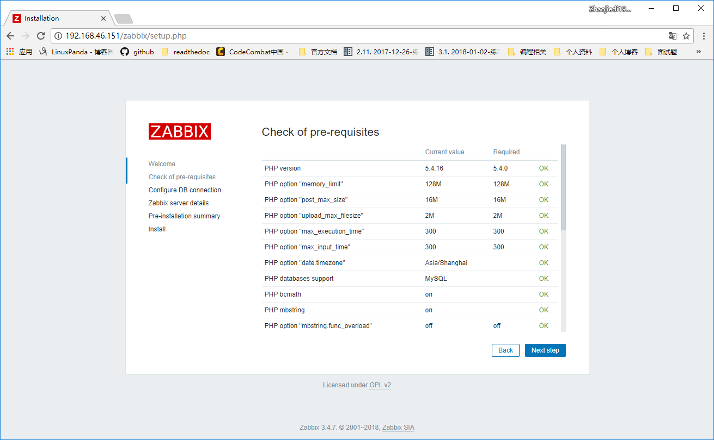
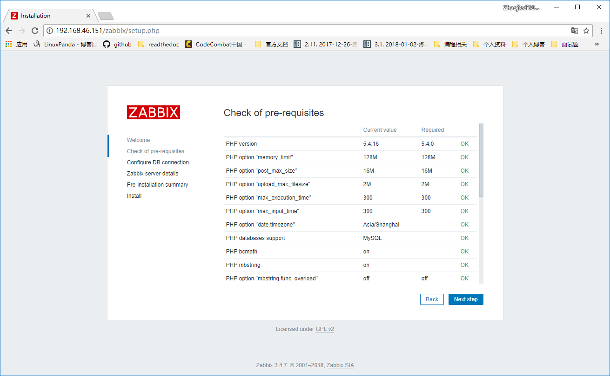
 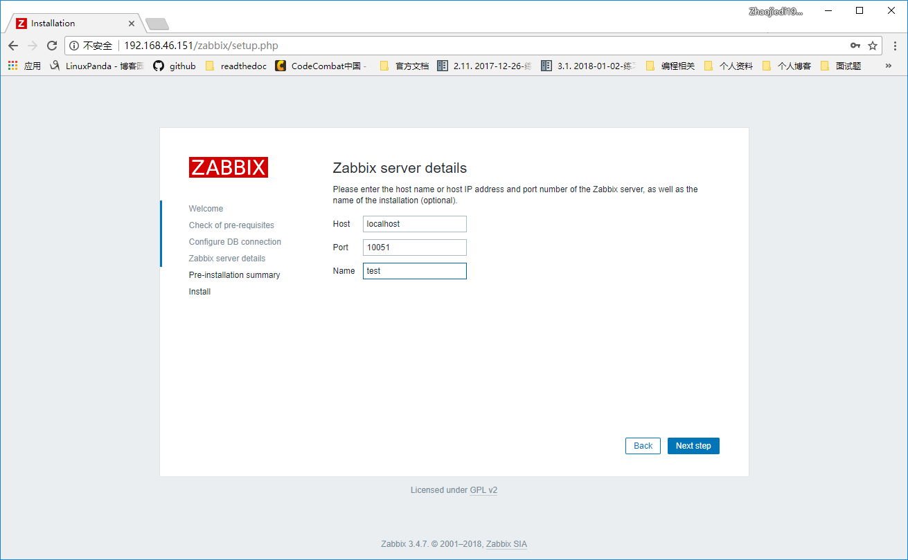
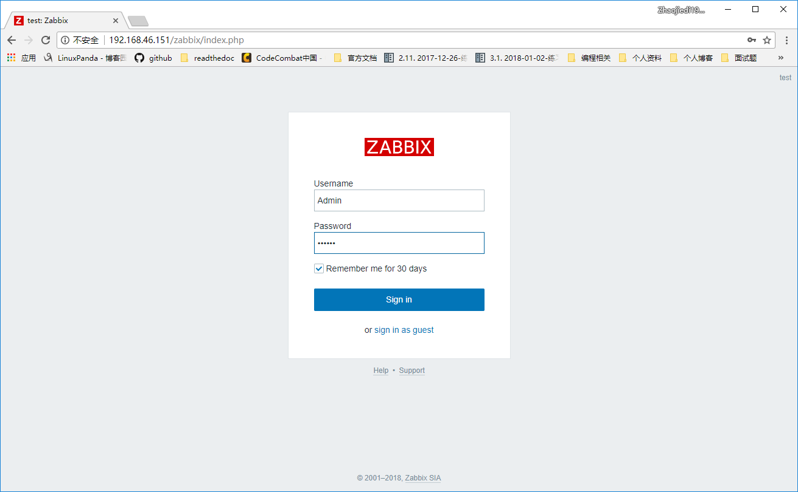
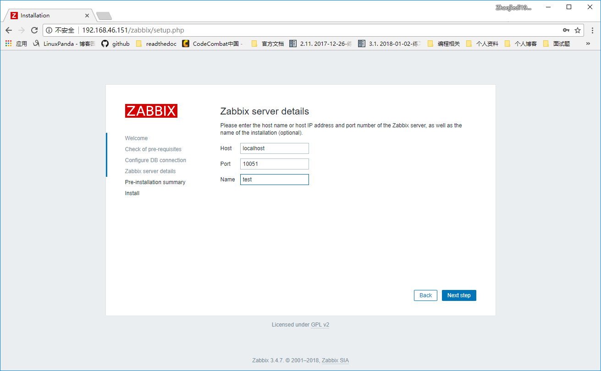
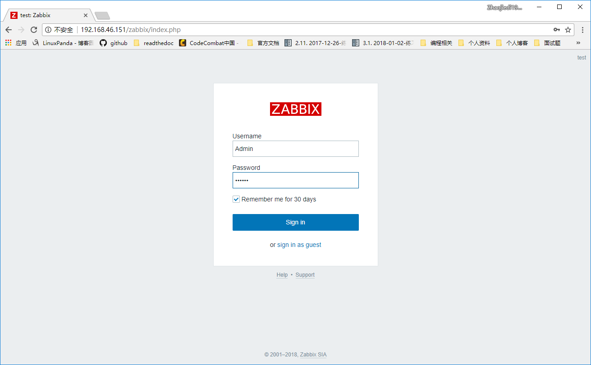

5.4.3. 准备工作¶
[root@centos-152 ~]# rpm -i http://repo.zabbix.com/zabbix/3.4/rhel/7/x86_64/zabbix-release-3.4-2.el7.noarch.rpm
[root@centos-152 ~]# yum install zabbix-agent
[root@centos-152 ~]# cd /etc/zabbix/
[root@centos-152 zabbix]# ls
zabbix_agentd.conf zabbix_agentd.d
[root@centos-152 zabbix]# vim zabbix_agentd.conf
# 修改如下3行
Server=192.168.46.151
ServerActive=192168.46.151
Hostname=centos-152.linuxpanda.tech
[root@centos-153 ~]# rpm -i http://repo.zabbix.com/zabbix/3.4/rhel/7/x86_64/zabbix-release-3.4-2.el7.noarch.rpm
[root@centos-153 ~]# yum install zabbix-agent
[root@centos-153 ~]# cd /etc/zabbix/
[root@centos-153 zabbix]# ls
zabbix_agentd.conf zabbix_agentd.d
[root@centos-153 zabbix]# vim zabbix_agentd.conf
# 修改如下3行
Server=192.168.46.151
ServerActive=192168.46.151
Hostname=centos-153.linuxpanda.tech
# 启动服务并查看监听
[root@centos-152 zabbix]# systemctl restart zabbix-agent
[root@centos-153 zabbix]# systemctl restart zabbix-agent
[root@centos-152 zabbix]# ss -tul
Netid State Recv-Q Send-Q Local Address:Port Peer Address:Port
tcp LISTEN 0 128 *:ssh *:*
tcp LISTEN 0 100 127.0.0.1:smtp *:*
tcp LISTEN 0 128 *:zabbix-agent *:*
tcp LISTEN 0 128 :::ssh :::*
tcp LISTEN 0 100 ::1:smtp :::*
tcp LISTEN 0 128 :::zabbix-agent :::*
[root@centos-153 zabbix]# ss -tul
Netid State Recv-Q Send-Q Local Address:Port Peer Address:Port
tcp LISTEN 0 128 *:ssh *:*
tcp LISTEN 0 100 127.0.0.1:smtp *:*
tcp LISTEN 0 128 *:zabbix-agent *:*
tcp LISTEN 0 128 :::ssh :::*
tcp LISTEN 0 100 ::1:smtp :::*
tcp LISTEN 0 128 :::zabbix-agent :::*


5.4.6. item¶
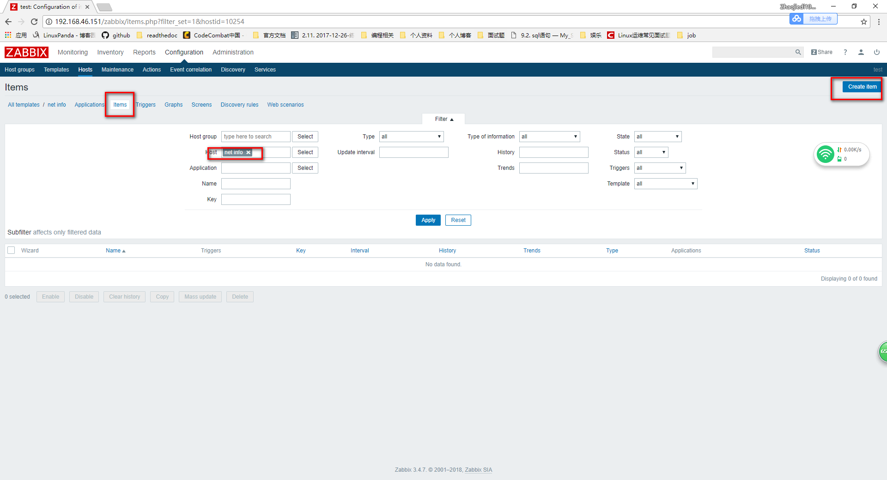 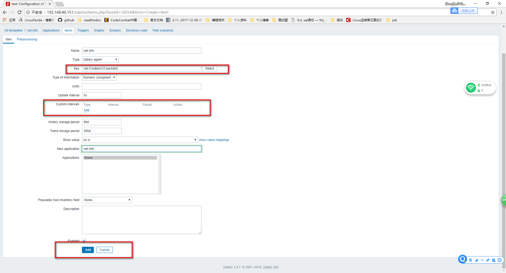 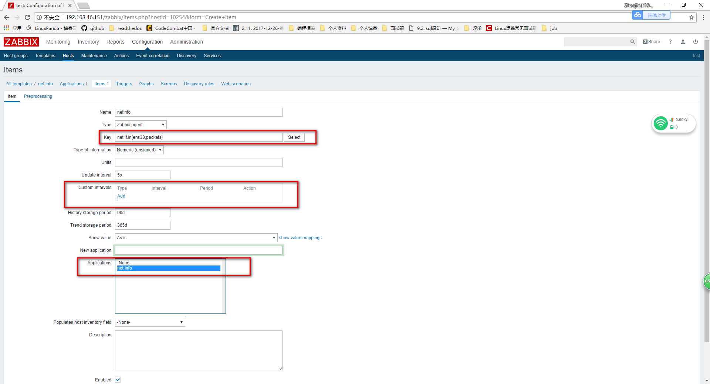

 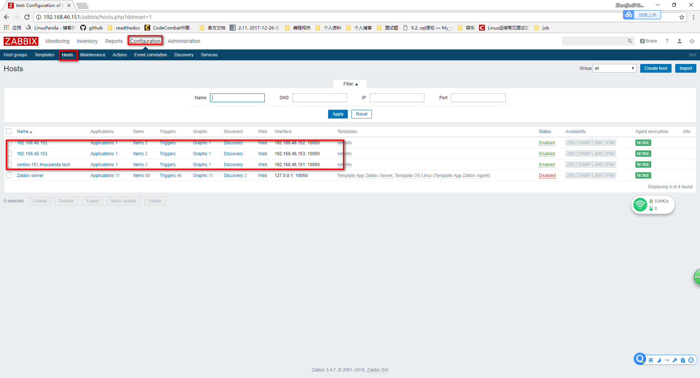
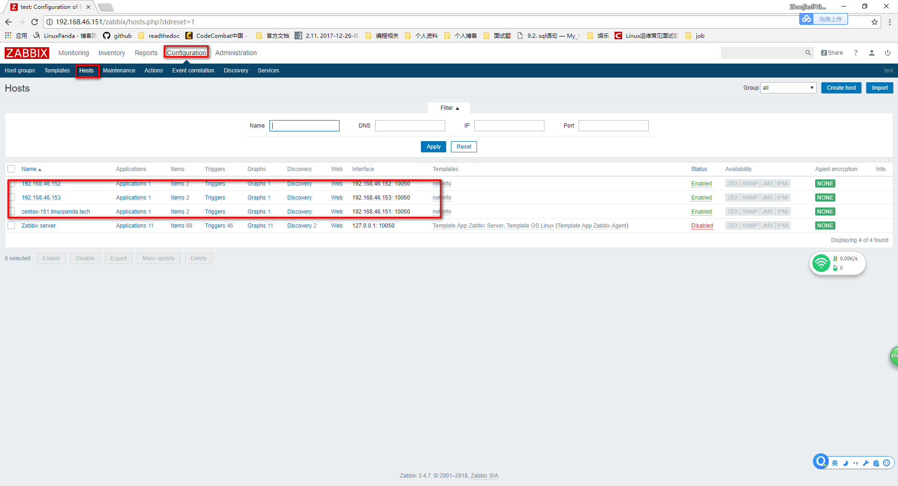

5.4.9. trigger(触发器)¶
这里以152的web应用为例说明trigger的使用
5.4.9.1. 安装web¶
[root@centos-152 zabbix]# yum install nginx
[root@centos-152 zabbix]# systemctl restart nginx
[root@centos-152 zabbix]# hostname
centos-152.linuxpanda.tech
[root@centos-152 zabbix]# hostname > /usr/share/nginx/html/index.html
[root@centos-152 zabbix]# curl localhost
centos-152.linuxpanda.tech
 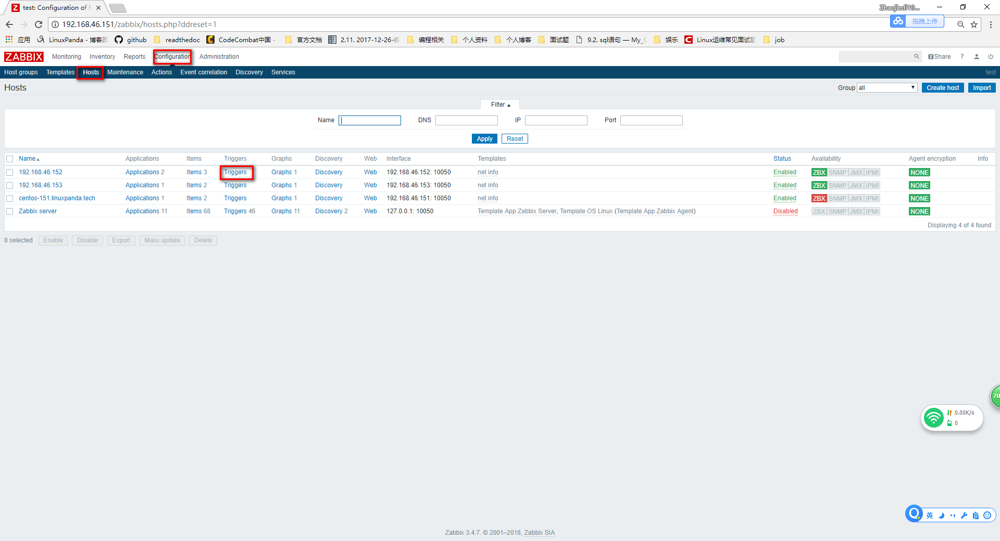
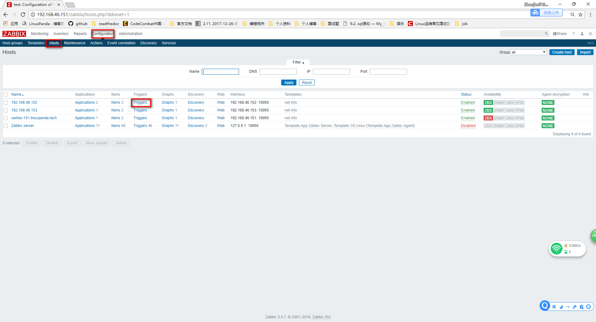

 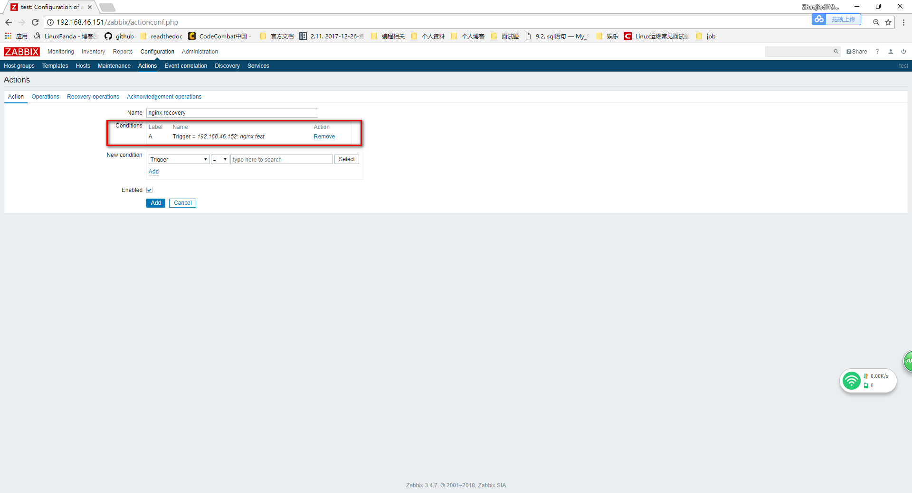
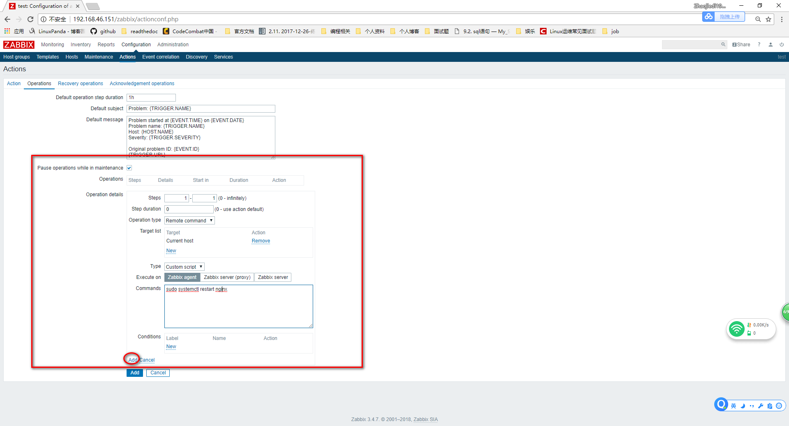
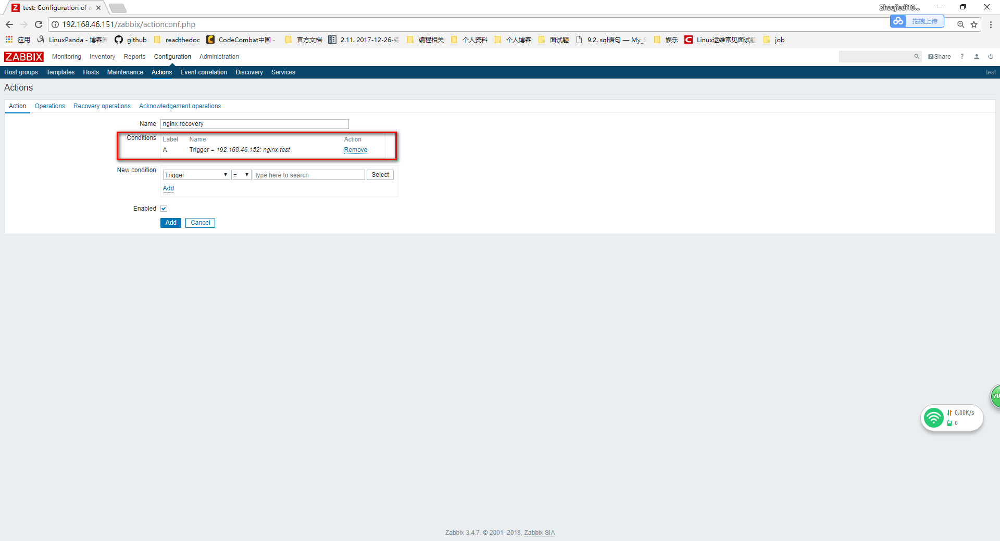
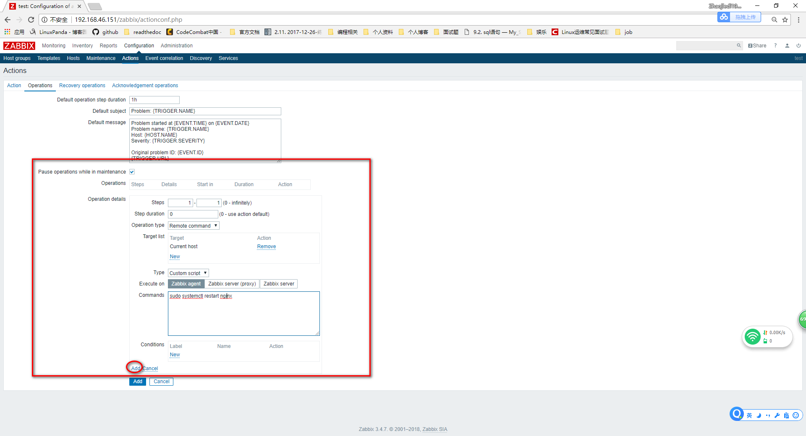


停下服务，测试监控
[root@centos-152 zabbix]# systemctl stop nginx

配置远程权限
# 配置sudo
zabbix ALL=(ALL) NOPASSWD: ALL
[root@centos-152 zabbix]# vim /etc/zabbix/zabbix_agentd.conf
EnableRemoteCommands=1
[root@centos-152 zabbix]# systemctl start nginx
[root@centos-152 zabbix]# systemctl stop nginx